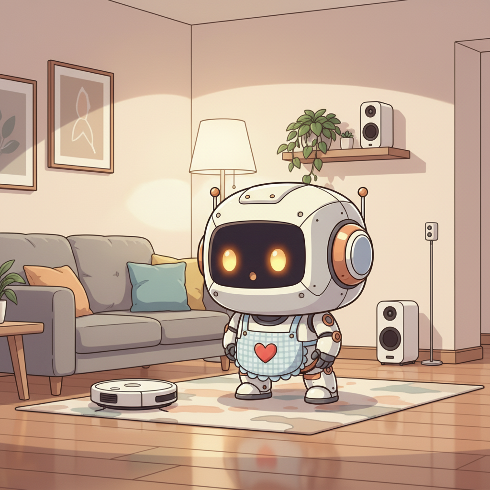
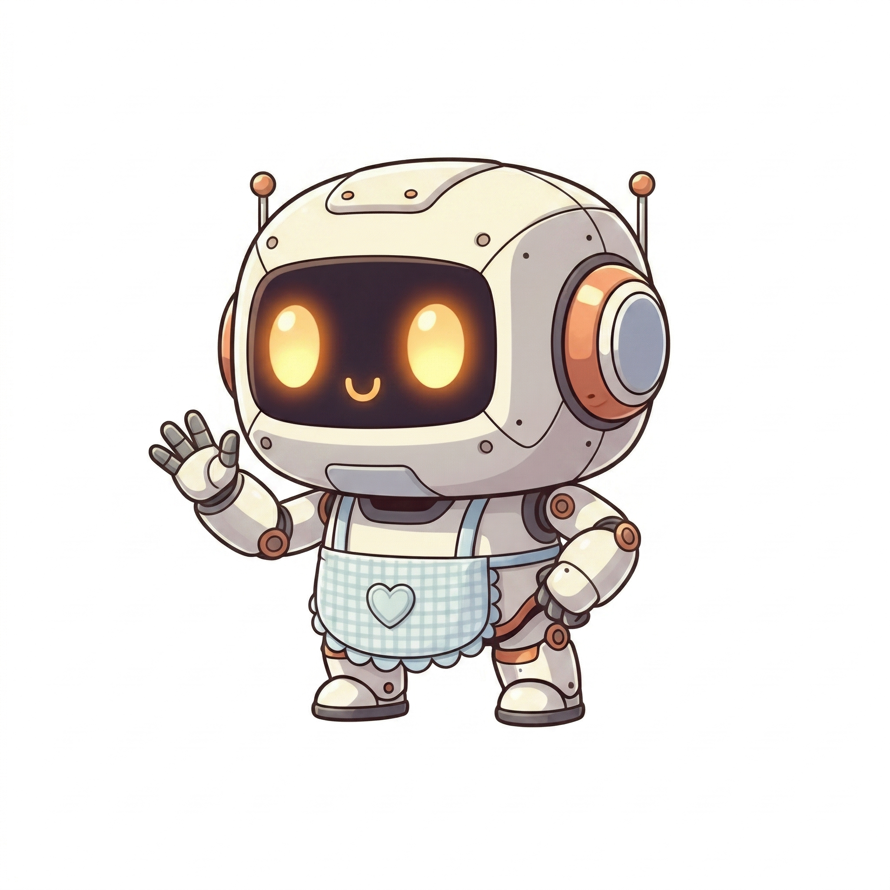
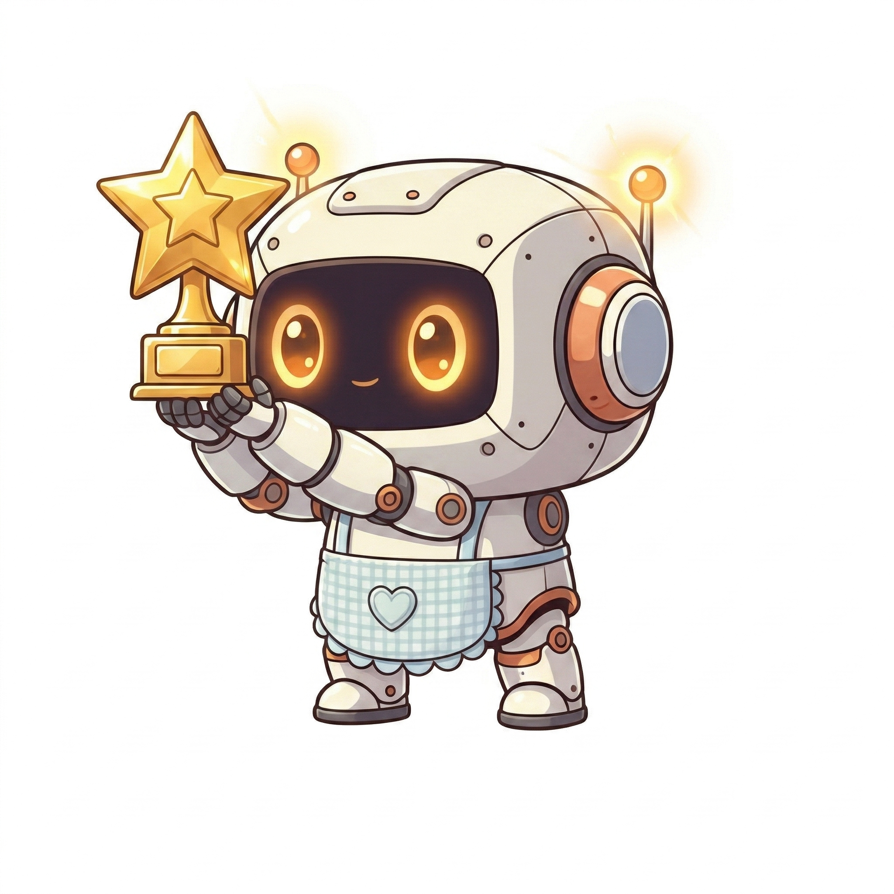
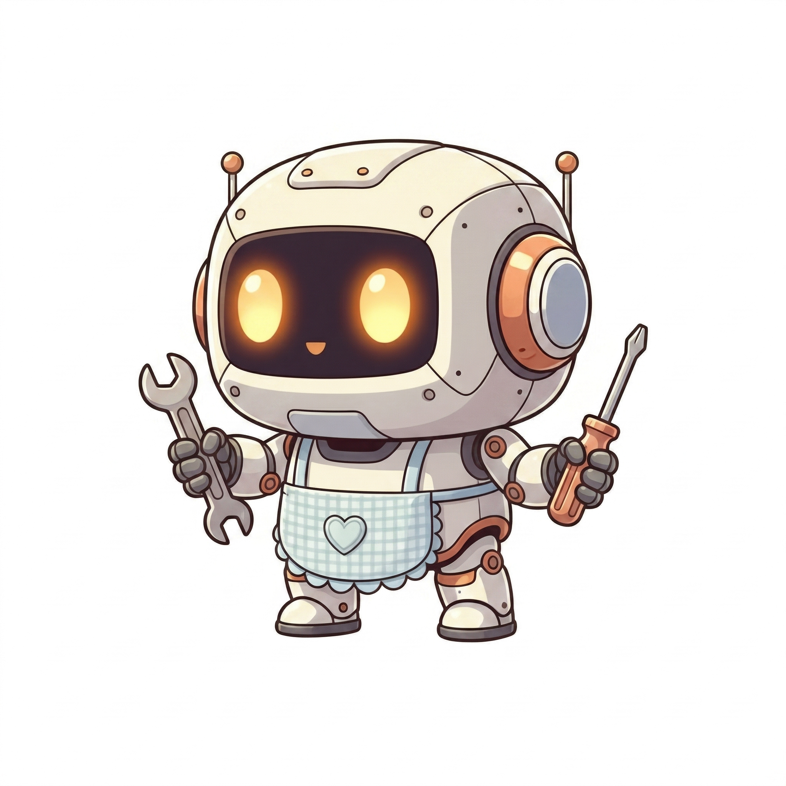

Te lo cuento cada 2 semanas: Gratis, honesto y en español
Únete gratis. Sin spam. Cancela cuando quieras.
Lo importante de la semana en robótica doméstica, sin ruido.
Robots que ya están a la venta: qué funciona, qué no, y por qué.
Modelos lado a lado para que decidas sin confusión ni tecnicismos innecesarios.
Mi voz, mis dudas, mis descubrimientos. Sin IA, sin guiones, sin filtro.
Tutoriales paso a paso para sacar el máximo partido a tu robot desde el primer día.
Conecta con otros entusiastas que comparten tu curiosidad por la robótica doméstica.

Lo que vas a leer
Comparativa de los 5 mejores modelos para pisos en España. Con precios reales y opinión sin filtro.
Leer →Análisis de la curva de precios de Neo, Figure 03 y Tesla Optimus. La respuesta te sorprenderá.
Leer →Tu robot aspirador sabe más de tu casa que tú. Qué datos recopilan y cómo protegerte.
Leer →Quién soy
No soy ingeniero. No trabajo para ninguna marca. Solo alguien que lleva años observando cómo estos robots entran en nuestras casas, probándolos, rompiéndolos a veces, y compartiendo lo que aprendo sin filtros.

Por qué confiar
Consistencia brutal desde el primer día. Sin promesas vacías, solo entregas.
Cada dos semanas, sin falta, en tu bandeja de entrada.
Tiempo real de lectura. Respeto por tu tiempo, siempre.
Lo que necesitas saber antes de suscribirte al newsletter.
Cada dos semanas en tu bandeja. Gratis, siempre.
Únete gratis. Sin spam. Cancela cuando quieras.
